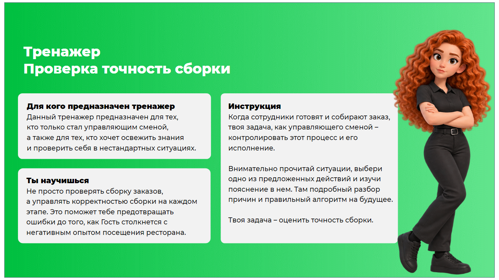

Когда сотрудники готовят и собирают заказ, твоя задача, как управляющего сменой — контролировать этот процесс и его исполнение.
Внимательно прочитай ситуации, выбери одно из предложенных действий и изучи пояснение в нём. Там подробный разбор причин и правильный алгоритм на будущее.
Твоя задача — оценить точность сборки.

Текущие ответы будут удалены. Ты сможешь пройти все ситуации ещё раз.